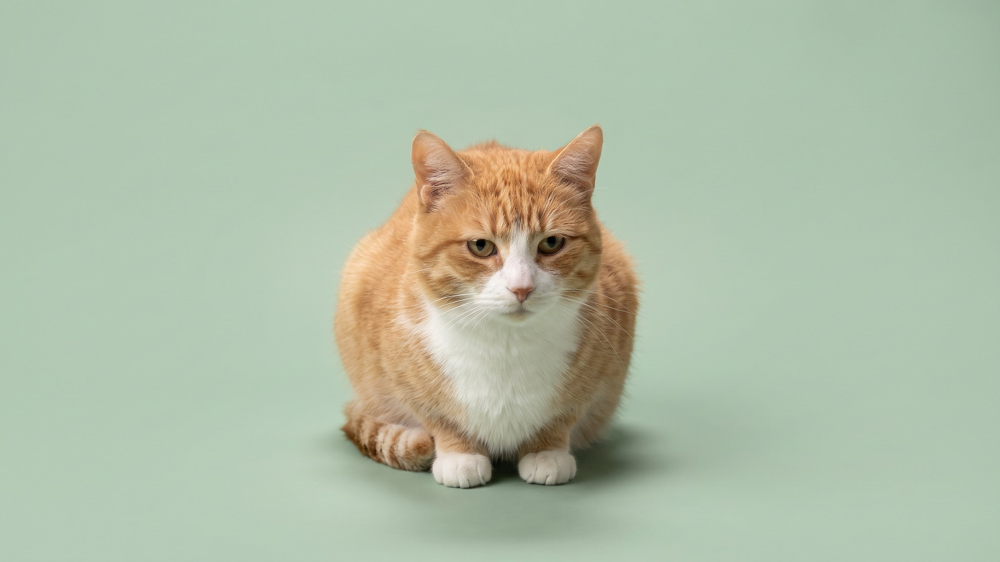

Хозяин садится — кошка уходит. Не на другой конец квартиры, а просто чуть в сторону: рядом, но не на коленях. Многие считают это равнодушием. На самом деле за этим стоит темперамент, история и несколько привычек самого хозяина. Разбираем причины и конкретные шаги, которые меняют ситуацию без принуждения.
🐾 У вашей кошки так же?
Расскажите в AnimaLife, как ведёт себя ваш питомец, — приложение объяснит причину и даст пошаговый план. Бесплатно, без записи к специалисту.
Разобрать свой случай → Разобрать в MAX →
У вас iPhone? AnimaLife есть в App Store
Первая причина — темперамент. Породы с независимым характером (норвежские лесные, сибирские, российские дворовые кошки) реже ищут физического контакта, чем, скажем, рэгдоллы или бурманские. Это не недостаток и не признак плохого воспитания. Часть кошек просто предпочитает присутствие без прикосновений.
Вторая причина — прошлый опыт. Кошка, которую брали на руки резко, держали против воли или пугали в детстве, запоминает это надолго. Колени для неё означают потерю контроля над ситуацией. Даже у хорошего хозяина такая кошка долго держит дистанцию.
Третья причина — то, как именно её берут на руки. Если хозяин каждый раз подходит сзади, поднимает без предупреждения или удерживает дольше, чем кошка хочет, — она учится уходить заранее, до того как её взяли.
Насильно сажать кошку на колени и удерживать — самый надёжный способ закрепить избегание. Кошка запоминает не тепло момента, а принуждение. После нескольких таких эпизодов она начинает уходить при одном приближении хозяина.
Доверие у кошки накапливается через предсказуемость. Несколько практичных шагов:
У взрослой кошки, которая никогда не сидела на коленях, изменения занимают недели. У кошки с негативным опытом — иногда месяцы. Прогресс выглядит постепенно: сначала она приходит ближе, потом нюхает руку, потом ненадолго кладёт лапу. Это уже контакт, просто не в той форме, которую ожидали.
Часть кошек так и не станет «коленной» — и это нормально. Кошка, которая спит рядом, мяукает при входе и трётся о ноги, любит по-своему. Не каждая кошка выражает привязанность через физический контакт.
🐾 Хотите понять, что кошка говорит вам?
Опишите ситуацию или пришлите видео в AnimaLife — AI разберёт поведение вашего питомца и подскажет, что делать. Бесплатно, ответ за минуту.
Разобрать поведение → Разобрать в MAX →
У вас iPhone? AnimaLife есть в App Store
🐾 Понравился разбор?
Подпишитесь на канал — каждый день разбираем по одному тревожному симптому у кошек и собак: что в пределах нормы, а когда пора к врачу. Подпишитесь, чтобы не пропустить разбор, который может спасти здоровье вашего питомца.
Материал носит информационный характер и не заменяет очную консультацию ветеринара.